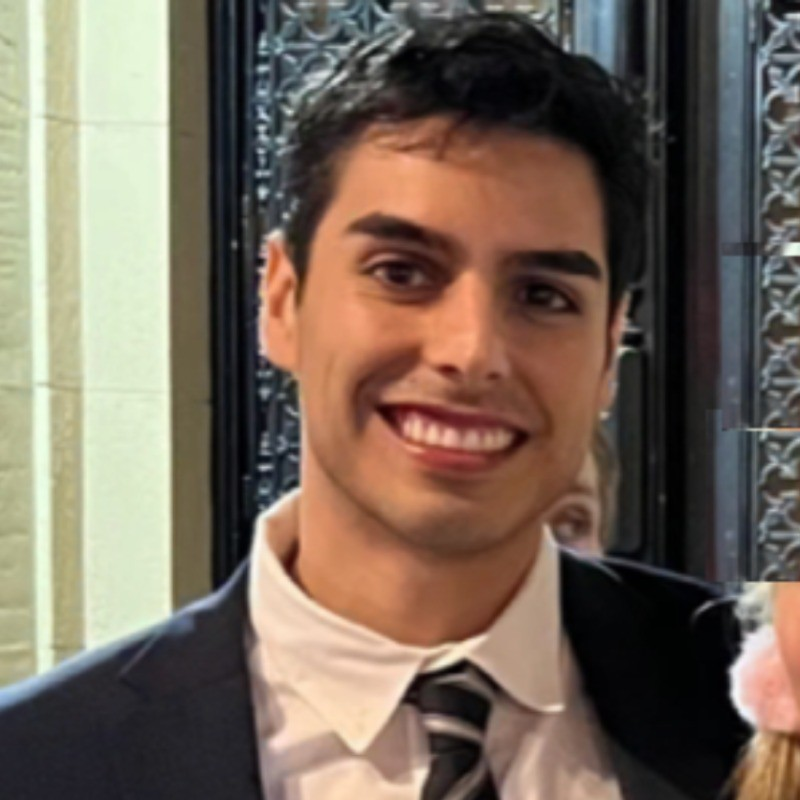

Devin Perales
Welcome to my professional hub!
As a results-driven communications and public relations expert with over 8 years of experience, I’ve built my career on pushing boundaries—whether it’s setting new industry standards or trailblazing revolutionary activations. As an effective team leader, I cultivate workplace cultures where creativity and collaboration drive success. When I’m not training my team or spearheading game-changing campaigns, I’m fueling powerhouse brands like Meta, adidas, X Games, Pabst Blue Ribbon, and Rockstar Games with fresh, visionary ideas and opportunities that keep them ahead of the curve.
Let’s connect and see how we can make waves together!
devperales@gmail.com
Work History
Account Manager
July 2021 - present
Pitchblend — San Francisco, California (Remote)
Clients Include: Meta, adidas Originals, adidas Purpose, adidas Basketball, adidas Outdoors, adidas Skateboarding, Facebook Communities, Facebook Marketplace, Air Company, Aria Network, Route App
- Orchestrate comprehensive marketing and public relations initiatives catering to a diverse clientele spanning Fortune 500 giants to fledgling startups, encompassing both B2B and B2C domains
- Conceptualize, craft, and execute tailored communication strategies, leveraging innovative campaigns and providing robust support for product launches and business endeavors
- Conduct in-depth market analysis to craft persuasive communication materials including press releases, award submissions, media alerts, bylines, blogs, website content, and social media messaging
- Direct a dynamic team of 10 media relations experts on a daily basis, steering integrated account teams merging PR, creative, social media, digital marketing, SEO, and research functions
- Enhance overall agency operations and growth alongside the CEO while driving additional revenue streams, clinching over $200K in new project deals beyond core client retainer agreements in the past six months
- Lead new business development efforts, creating compelling RFP responses and delivering winning presentations, securing five blue-chip clients within the first year of joining the agency
- Scrutinize and finalize comprehensive reports featuring crucial metrics such as gross impressions, share of voice, sentiment analysis, KPI comparisons, ROI, and advertising value
- Collaborate closely with the agency's COO to oversee team resources allocation and budget management
Senior Publicist, Brands & Events
November 2016 – July 2021
INFAMOUS PR - Culver City, California
Clients Include: Pabst Blue Ribbon, Rockstar Games, X Games, Smirnoff, Red Bull, Range Rover, Wu-Tang Clan, Coachella, Primavera Sound, HARD Events, CRSSD, Splash House, Do LaB, Rüfüs Du Sol
- Managed a range of internal teams while directing all PR strategy for 25+ festivals each year, sparking 30% growth for the Events Division by identifying business opportunities and effectively presenting proposals to prospective accounts
- Launched the agency’s Brand Division, securing marquee accounts such as Pabst Blue Ribbon, Rockstar Games, and Range Rover, while driving high-level communications planning and execution for brand clients
- Co-founded the agency’s content studio, Infamy Media, overseeing production, partnerships, and promotion for a rich array of live stream shows, series, and channels on Twitch
Executive Assistant
January 2016 – October 2016
Paradigm — Hollywood, California, California
- Spearheaded key administrative tasks for two agents and a junior agent, handling a high volume of calls and emails, as well as coordinating daily calendars/schedules, travel arrangements, and expense reports
- Authored time-sensitive performance contracts, tracked payments, and examined settlement sheets for accurate calculations on an ongoing basis for 50+ artists, accounting for gross monthly income ranging from $500K to $2M+
- Maximized concert sales by facilitating artwork approval, reviewing social posts, planning meet-and-greets, and organizing giveaways in coordination with managers and promoters
Marketing Intern (Music & Touring)
September 2015 – December 2015
Creative Artist Agency — Century City, California
- Hand-selected for a highly competitive internship placement with CAA, leveraging advanced Excel skills to identify specific marketing needs for each client and designed marketing strategies that increased fan engagement
- Empowered agents and senior leaders with actionable intelligence by compiling every record labels’ roster along with key data points to demonstrate trends and areas of opportunity
Education
Bachelor of Arts, Communication
University of Southern California — Los Angeles, California